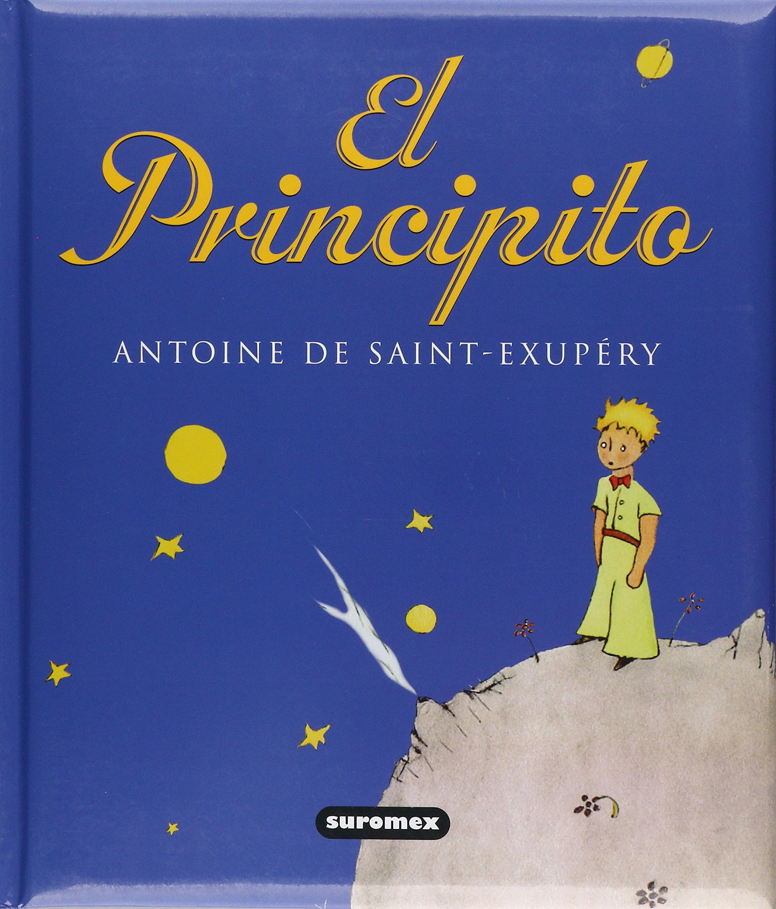

El Poder de la Disciplina
La disciplina no es una limitación, sino la verdadera llave de tu libertad. Mientras que la motivación es un chispazo pasajero que te abandona en los días difíciles, la autodisciplina es el hábito inquebrantable de cumplirte a ti mismo sin importar cómo te sientas. Al aprender a dominar tus impulsos inmediatos y cambiar la comodidad del momento por el esfuerzo enfocado, dejas de ser un espectador de tus deseos para convertirte en el autor de tus propios logros.

El principito
Acompaña a un aviador perdido en el desierto del Sahara que encuentra a un pequeño y misterioso niño proveniente de otro planeta. A través de los relatos de su viaje por diferentes asteroides, el Principit o revela las absurdas obsesiones de los adultos, obsesionados con el poder, el dinero y la vanidad. Mediante sus encuentros en la Tierra, especialmente con un zorro que le enseña el valor de la amistad, el niño comprende la responsabilidad del amor y el cuidado hacia los suyos. Es una aventura conmovedora que te invita a desaprender la frialdad del mundo adulto para recuperar la pureza de mirar el corazón de las cosas.
Patrones de diseño
Los patrones de diseño son soluciones probadas y reutilizables para problemas comunes en el desarrollo de software orientado a objetos. Su estudio se divide principalmente en tres enfoques literarios: la obra fundacional y académica del "Gang of Four" (GoF) para una base teórica profunda, "Head First Design Patterns" si prefieres un aprendizaje visual, dinámico y ameno, y "Dive Into Design Patterns" como la alternativa más moderna, gráfica y adaptada al desarrollo actual.
El Poder de la Disciplina
La disciplina no es una limitación, sino la verdadera llave de tu libertad. Mientras que la motivación es un chispazo pasajero que te abandona en los días difíciles, la autodisciplina es el hábito inquebrantable de cumplirte a ti mismo sin importar cómo te sientas. Al aprender a dominar tus impulsos inmediatos y cambiar la comodidad del momento por el esfuerzo enfocado, dejas de ser un espectador de tus deseos para convertirte en el autor de tus propios logros.